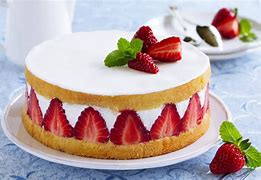
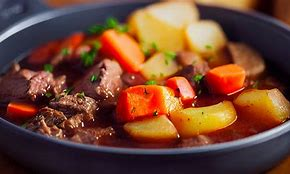

Fraisier
Ingrédients :
Pour la génoise :
- 4 œufs
- 120 g de sucre
- 120 g de farine
- 1 cuillère à café d’extrait de vanille
Pour la crème mousseline :
- 500 ml de lait
- 1 gousse de vanille (ou extrait de vanille)
- 4 jaunes d’œufs
- 100 g de sucre
- 50 g de maïzena (fécule de maïs)
- 150 g de beurre mou
Pour le montage :
- 500 g de fraises fraîches
- 2 cuillères à soupe de confiture d’abricot (pour napper)
- Feuilles de gélatine (optionnel, pour stabiliser la crème)
Instructions :
1. Préparer la génoise :
- Préchauffez le four à 180°C.
- Fouettez les œufs et le sucre jusqu’à ce que le mélange blanchisse et double de volume.
- Ajoutez l’extrait de vanille, puis incorporez délicatement la farine tamisée.
- Versez la pâte dans un moule beurré et enfournez pendant 20-25 minutes. Laissez refroidir.
2. Préparer la crème mousseline :
- Faites chauffer le lait avec la gousse de vanille fendue (ou l’extrait de vanille).
- Dans un bol, fouettez les jaunes d’œufs avec le sucre jusqu’à ce que le mélange blanchisse. Ajoutez la maïzena.
- Versez le lait chaud sur le mélange d’œufs tout en remuant, puis reversez le tout dans la casserole.
- Faites cuire à feu moyen en remuant constamment jusqu’à ce que la crème épaississe.
- Retirez du feu et ajoutez le beurre mou. Mélangez bien et laissez refroidir.
3. Montage du fraisier :
- Coupez la génoise en deux disques.
- Placez un disque au fond d’un moule à charnière (ou cercle à pâtisserie).
- Disposez des fraises coupées en deux sur les bords du moule, la partie coupée contre le bord.
- Remplissez le centre avec des fraises entières ou coupées.
- Étalez une couche de crème mousseline sur les fraises.
- Placez le deuxième disque de génoise sur la crème.
- Recouvrez le gâteau avec le reste de crème mousseline. Lissez la surface.
- Faites fondre la confiture d’abricot avec un peu d’eau et nappez le dessus du gâteau pour le brillant.
- Décorez avec des fraises fraîches.
4. Réfrigération :
Laissez reposer au réfrigérateur pendant au moins 2 heures avant de servir.
Conseil :
Vous pouvez ajouter une couche de gelée de fraises sur le dessus pour plus de saveur et de brillance.
Sablé
Ingrédients :
- 250 g de farine
- 125 g de beurre mou
- 100 g de sucre
- 1 œuf
- 1 pincée de sel
- 1 cuillère à café d’extrait de vanille (optionnel)
Instructions :
- Dans un grand bol, mélangez le beurre mou et le sucre jusqu’à obtenir une consistance crémeuse.
- Ajoutez l’œuf et l’extrait de vanille (si utilisé), puis mélangez bien.
- Incorporez progressivement la farine et la pincée de sel jusqu’à former une pâte homogène.
- Formez une boule avec la pâte, enveloppez-la dans du film alimentaire et placez-la au réfrigérateur pendant 30 minutes.
- Préchauffez le four à 180°C (thermostat 6).
- Étalez la pâte sur un plan de travail fariné à une épaisseur d’environ 5 mm.
- Découpez des formes à l’aide d’un emporte-pièce ou d’un verre.
- Disposez les sablés sur une plaque de cuisson recouverte de papier sulfurisé.
- Enfournez pendant 10 à 12 minutes, jusqu’à ce que les bords soient légèrement dorés.
- Laissez refroidir sur une grille avant de déguster.
Conseils :
- Pour des sablés plus croquants, laissez-les cuire un peu plus longtemps, mais surveillez la couleur.
- Vous pouvez ajouter du zeste de citron ou d’orange pour une touche aromatique supplémentaire.
- Conservez les sablés dans une boîte hermétique pour garder leur croquant.
Pizza
Ingrédients :
Pour la pâte :
- 300 g de farine
- 1 sachet de levure boulangère (7 g)
- 180 ml d’eau tiède
- 1 cuillère à café de sel
- 1 cuillère à soupe d’huile d’olive
Pour la garniture :
- 100 g de sauce tomate
- 150 g de mozzarella
- Quelques feuilles de basilic frais
- 1 cuillère à soupe d’huile d’olive
- Sel et poivre au goût
Instructions :
1. Préparer la pâte :
- Dans un bol, mélangez la levure avec l’eau tiède et laissez reposer 5 minutes.
- Ajoutez la farine, le sel et l’huile d’olive. Mélangez jusqu’à obtenir une pâte homogène.
- Pétrissez la pâte pendant 10 minutes jusqu’à ce qu’elle soit lisse et élastique.
- Placez la pâte dans un bol légèrement huilé, couvrez d’un torchon et laissez reposer 1 heure dans un endroit chaud.
2. Étaler la pâte :
- Préchauffez le four à 220°C (thermostat 7).
- Sur un plan de travail fariné, étalez la pâte en un cercle d’environ 30 cm de diamètre.
- Placez la pâte sur une plaque de cuisson recouverte de papier sulfurisé.
3. Garnir la pizza :
- Étalez la sauce tomate sur la pâte en laissant un bord de 1 cm.
- Disposez la mozzarella coupée en tranches ou en morceaux sur la sauce.
- Ajoutez quelques feuilles de basilic frais.
- Arrosez d’un filet d’huile d’olive et assaisonnez avec du sel et du poivre.
4. Cuire la pizza :
- Enfournez pendant 10 à 15 minutes, jusqu’à ce que la croûte soit dorée et la mozzarella fondue.
- Sortez la pizza du four et ajoutez quelques feuilles de basilic frais supplémentaires.
- Servez chaud.
Conseils :
- Pour une pâte plus croustillante, utilisez une pierre à pizza.
- Vous pouvez ajouter des tomates fraîches en tranches pour plus de fraîcheur.
- Si vous aimez les saveurs intenses, ajoutez quelques olives noires ou des câpres.
Bœuf bourguignon
Ingrédients :
- 1,5 kg de bœuf (joue, paleron ou gîte)
- 200 g de lardons fumés
- 500 g de petits oignons
- 500 g de champignons de Paris
- 2 carottes
- 2 gousses d’ail
- 1 bouteille de vin rouge (Bourgogne de préférence)
- 2 cuillères à soupe de farine
- 2 cuillères à soupe d’huile d’olive
- 1 bouquet garni (thym, laurier, persil)
- Sel et poivre au goût
Instructions :
1. Préparation des ingrédients :
- Coupez le bœuf en gros cubes d’environ 4 cm.
- Épluchez et coupez les carottes en rondelles.
- Épluchez les petits oignons et les gousses d’ail.
- Nettoyez les champignons et coupez-les en quartiers si nécessaire.
2. Cuisson du bœuf :
- Dans une cocotte, faites chauffer l’huile d’olive à feu moyen.
- Faites dorer les morceaux de bœuf sur toutes les faces, puis retirez-les et réservez.
- Dans la même cocotte, faites revenir les lardons jusqu’à ce qu’ils soient légèrement croustillants.
- Ajoutez les carottes, les oignons et l’ail. Faites revenir pendant 5 minutes.
- Saupoudrez la farine et mélangez bien pour enrober les légumes.
3. Mijotage :
- Remettez le bœuf dans la cocotte.
- Versez le vin rouge jusqu’à ce que les ingrédients soient à peine couverts.
- Ajoutez le bouquet garni, salez et poivrez.
- Portez à ébullition, puis réduisez le feu et couvrez.
- Laissez mijoter à feu doux pendant 2h30 à 3 heures, en remuant de temps en temps.
4. Ajout des champignons :
- 30 minutes avant la fin de la cuisson, ajoutez les champignons.
- Vérifiez l’assaisonnement et ajustez si nécessaire.
5. Service :
- Retirez le bouquet garni.
- Servez le bœuf bourguignon chaud, accompagné de pommes de terre vapeur, de pâtes ou de riz.
Conseils :
- Pour une saveur plus intense, préparez la veille et réchauffez avant de servir.
- Vous pouvez remplacer les champignons de Paris par des cèpes ou des girolles pour une version plus gourmande.
- Servez avec un verre de vin rouge de Bourgogne pour un accord parfait.
Vol au vent
Ingrédients :
Pour la pâte feuilletée :
- 500 g de farine
- 250 g de beurre froid
- 1 cuillère à café de sel
- 200 ml d’eau froide
Pour la garniture :
- 300 g de blanc de poulet
- 200 g de champignons de Paris
- 1 oignon
- 50 g de beurre
- 50 g de farine
- 500 ml de bouillon de volaille
- 100 ml de crème fraîche
- Sel et poivre au goût
- Persil frais pour la décoration
Instructions :
1. Préparation de la pâte feuilletée :
- Dans un grand bol, mélangez la farine et le sel.
- Ajoutez le beurre froid coupé en petits morceaux et mélangez jusqu’à obtenir une texture sableuse.
- Incorporez l’eau froide petit à petit jusqu’à former une boule de pâte.
- Enveloppez la pâte dans du film alimentaire et placez-la au réfrigérateur pendant 30 minutes.
- Étalez la pâte en un rectangle, pliez-la en trois et tournez-la d’un quart de tour. Répétez cette opération 4 à 5 fois.
- Laissez reposer la pâte au réfrigérateur pendant 1 heure.
2. Cuisson des vol-au-vent :
- Préchauffez le four à 200°C (thermostat 6).
- Étalez la pâte sur environ 5 mm d’épaisseur.
- Découpez des cercles à l’aide d’un emporte-pièce.
- Pour chaque cercle, découpez un petit cercle au centre pour former un couvercle.
- Dorez les cercles avec un peu d’eau ou de jaune d’œuf.
- Enfournez pendant 15 à 20 minutes, jusqu’à ce que les vol-au-vent soient bien dorés.
3. Préparation de la garniture :
- Coupez le poulet en petits morceaux et faites-le revenir dans une poêle avec un peu de beurre jusqu’à ce qu’il soit bien cuit. Réservez.
- Dans la même poêle, faites revenir l’oignon émincé et les champignons coupés en morceaux.
- Ajoutez le beurre et la farine, puis mélangez bien pour former un roux.
- Versez le bouillon de volaille petit à petit en remuant pour éviter les grumeaux.
- Ajoutez la crème fraîche et mélangez jusqu’à obtenir une sauce lisse.
- Incorporez le poulet cuit et assaisonnez avec du sel et du poivre.
4. Montage :
- Ouvrez délicatement les vol-au-vent cuits.
- Remplissez-les avec la garniture au poulet et aux champignons.
- Replacez les couvercles et décorez avec du persil frais.
- Servez chaud.
Conseils :
- Vous pouvez utiliser de la pâte feuilletée toute prête pour gagner du temps.
- Pour une version plus riche, ajoutez des quenelles de volaille ou des ris de veau à la garniture.
- Servez avec une salade verte pour un repas complet.